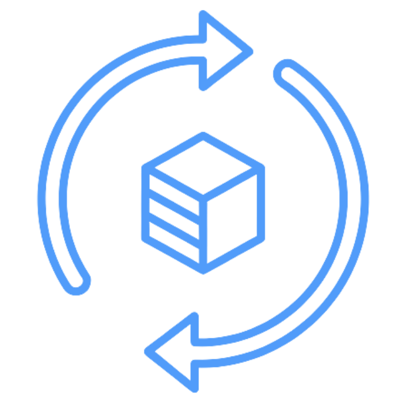

Keys Editor
Slider-based key effects: interpolate, push/pull, ease, wave, offset and more, plus key cleanup (delete flat / redundant) and bake.
DocsA free animation toolset for Maya. Sliders, baking, a radial menu and a scrub HUD, one drag-and-drop install.
Each entry links to its documentation page.
Slider-based key effects: interpolate, push/pull, ease, wave, offset and more, plus key cleanup (delete flat / redundant) and bake.
DocsBake animation in world space, in an object space or relative to a camera, with a list of baked controls.
DocsOffsets the animation based on the transform you give the selected object.
Docs
Reset all keyable channels of the selection to their defaults. One undo step, locked channels skipped.
DocsAlways-on glass HUD for selection sets: color chips select, color dots filter.
DocsViewport motion trails, world or camera relative, with editable handles. Features may change.
DocsKeys Editor sliders and action buttons right under the timeline. Reorder and hide tools in Settings.
DocsThe same sliders and action buttons attached to the Graph Editor. It never forces the editor wide.
DocsFloating wheel on Alt+Q. One wheel over the viewport, another over the Graph Editor. Configure both in Settings.
DocsFloating bar of your favorite tools in the viewport. Stays visible while Maya is in the background.
DocsHold the key and drag for an endless scrub with a temporary timeline showing range, keys and bookmarks. Shift = fine, Ctrl = coarse.
DocsToolbars, hotkeys, radial menu and viewport bar contents, startup and the documentation, in one window.
DocsKeyBelt 0.2.0
Shortcut link: andre1xyz.github.io/keybelt/download/ · Documentation
KeyBelt folder together.KeyBelt/drag_n_drop.py into a Maya viewport. A KeyBelt shelf tab appears and KeyBelt starts with Maya from then on.Updates: KeyBelt checks for updates. Click Update in Settings and the new version is installed when you restart Maya. Your settings are kept.
If you move or rename the folder, drop drag_n_drop.py again.
KeyBelt stays free, with its core tools. These are plans, not promises:
KeyBelt can grow into my bigger personal toolset, Andreus ToolBox. A selection of what it already has is below. These tools are in development and are not part of KeyBelt today.

Store an offset, snap now, or match a range between objects, without constraints.
Blend or hold world-space translate and rotate across a frame range.
Overlaps for individual controls, fast and without pre-baking.
World-space lag on a control chain that follows the root's motion path.
Dynamic curve overlap rigs built on nHair, with sim bake and cleanup.
A temporary pivot for animation without changing the original pivot.
Temporary IK and FK control chains with animation bake and cleanup.
Create a path from a control, adapt it, then bake.
Studio Library compatible poses and selection sets with thumbnails.
Copy and paste poses between the same or different rigs.
Picker panel with selection buttons over a photo or schematic of the character.
Soft-sculpt on a live copy of a skinned mesh.
Viewport stroke tool: draw a line and lay poses or shapes along it.
A compact channel box with display and animation layers for animators.
Playblasts with custom viewport settings, folders, thumbnails and metadata.
Export animation curves to versioned JSON files and import them back.
KeyBelt is free to use. The terms are in the EULA included in the zip. You may not redistribute it; please link to this page instead.
Bug reports, ideas and feedback are welcome. Find me on the main site (see the Resume tab for contact details).